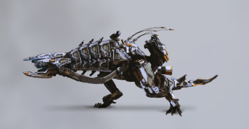
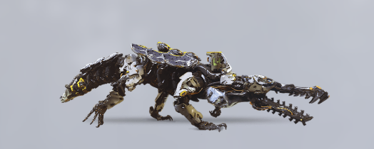
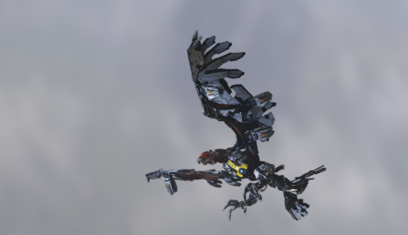
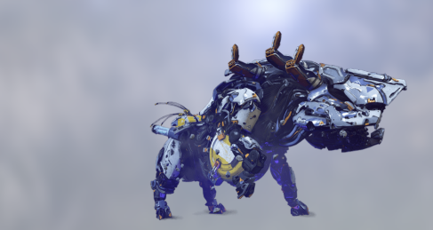

Atronador
El Atronador es una máquina de combate de todas las máquinas se considera una de las más
letales en Horizon Zero Dawn. Una formidable bestia equipada con cañones, lanzador de discos y
un láser en el hocico; sus poderosos ataques a distancia acabarán de manera rápida con cualquier
cazador lo suficientemente tonto para alertarlo. Cuando tiene suficiente espacio, también puede
desencadenar un devastador repertorio de ataques cuerpo a cuerpo como embestidas y barridos de cola.
Quebrantahuesos
Una máquina de adquisición, al Quebrantahuesos normalmente se le encuentra tomando el sol en
cuerpos de agua o cerca de ellos, donde extrae minerales valiosos de los sedimentos. Se puede
mover con sorprendente ferocidad cuando entra en fase de alerta, desencadenando un surtido de
ataques cuerpo a cuerpo en los que se incluyen poderosas embestidas con mordiscos y barridos de cola.
Para atacar a distancia dispara morteros criogénicos que congelan al objetivo al impactar.


Tormenta
Volando a gran altura, el temible Tormenta es una máquina de combate que puede
descender en picada y atacar a su presa con una tremenda fuerza. Es tan peligrosa en la
tierra como en el aire, con una variedad de poderosos y rápidos ataques que van desde ráfagas
de las alas hasta cortes con las garras. Sus enormes alas de metal son capaces de recolectar y
descargar la electricidad que se encuentra en el aire.
Bégimo
El Bégimo es una enorme y robusta máquina de transporte que utiliza tecnología antigravedad
para transferir su preciada carga de máquinas de adquisición más pequeñas al contenedor de su estómago.
Cuando es provocado, puede embestir al enemigo o usar su unidad antigravedad para lanzar objetos pesados.
También está equipado con un conjunto de taladros que le permiten pulverizar y lanzar rocas.